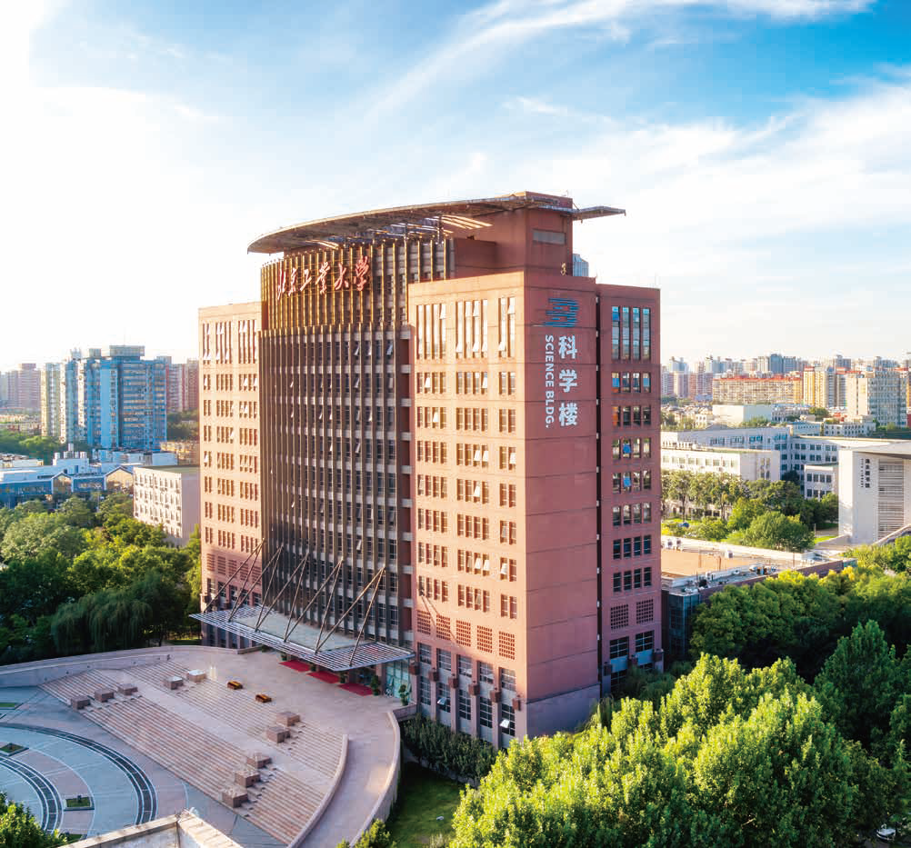

CPS Computational Learning Laboratory
About
In 1960, Beijing University of Technology (BJUT) was established, bearing the mission of providing the capital with engineering talents to serve the new high-level, high-precision and advanced industrial system. In 1981, BJUT was approved as one of the first universities in China to confer Master's Degrees. In 1985, BJUT was approved to confer Doctoral Degrees. In 1996, BJUT entered the list of key universities in the national "211 Project". In 2008, BJUT successfully held the badminton and gymnastics events of the Beijing Olympic Games. In 2017, BJUT officially entered the list of universities in the national "Double First-Class" Initiative. BJUT ranked 32nd in Chinese mainland in the QS World University Rankings 2020.
Today, BJUT has developed into a high-level multi-disciplinary research university providing programs in science, engineering, economics, management, literature, law, art and education, with engineering as a core focus. Currently, BJUT has 3 national key disciplines, 21 Beijing municipal key disciplines, 72 undergraduate programs, 33 master's degree programs, 20 doctoral degree programs and 18 post-doctoral research centers. 8 disciplines entered Top 500 of the 2020 QS World University Rankings by Subject. 7 disciplines entered Top 1% of the ESI Rankings, among which Engineering ranked Top 1‰.
Centered on the task of providing high-level innovative talents for the economic and social development of Beijing, BJUT strives to cultivate first-class talents with an exploring spirit, innovative spirit and global vision by actively exploring innovative talent training models. BJUT students have been nominated for and awarded the "Top 100 national excellent doctoral theses of China" prize for 21 times, ranking among the top institutions in China and first among all local universities.
